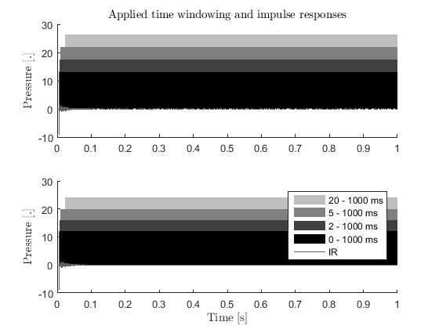
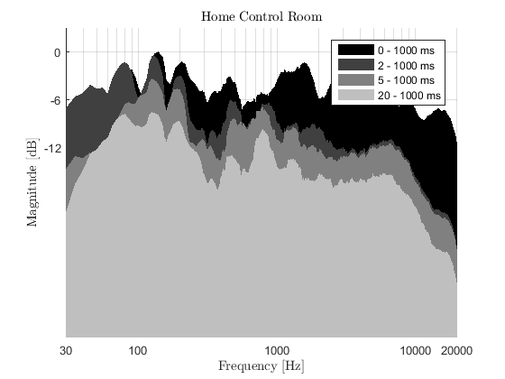
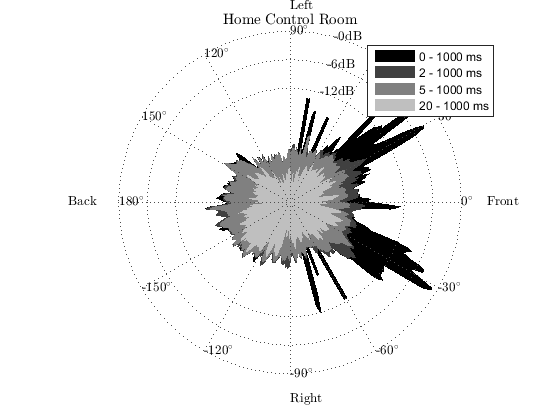
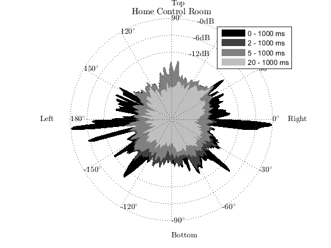

Contents
- Example usage of SDM toolbox for analysis, synthesis, and binaural reproduction.
- Load the impulse response and the source signal
- Download CIPIC HRTFS
- Read the data
- Create SDM struct for analysis with a set of parameters
- Calculate the SDM coefficients
- Create a struct for visualization with a set of parameters
- Draw analysis parameters and impulse responses
- Draw time frequency visualization
- Draw the spatio temporal visualization for each section plane
- Create a struct for synthesis with a set of parameters
- Synthesize the spatial impulse response with NLS as binaural
- Convolution with the source signal
- Saving the auralization to a file
- Playback using Matlab or other applications
Example usage of SDM toolbox for analysis, synthesis, and binaural reproduction.
The data are room impulse responses measured in a control room type space in home environment.
% SDM toolbox : demoBinauralRendering % Sakari Tervo & Jukka Pätynen, Aalto University, 2016 % Sakari.Tervo@aalto.fi and Jukka.Patynen@aalto.fi
Load the impulse response and the source signal
1s long impulse response measured at 192 kHz Loudspeakers are custom-made passive 2-way loudspeakers at approximately 1 meter distance from the microphone array. IRs contain left and right channel of the audio system.
% Download a spatial room impulse response ir_filename = 'IR_home_control_room'; if ~exist([ir_filename '.mat'],'file') disp(['Downloading an example IR ' ir_filename ' from the database.']) url_ir = ['https://mediatech.aalto.fi/~tervos/' ir_filename '.mat']; websave([ir_filename '.mat'],url_ir); end % Download a stereofile from free music archive audio_filename = 'paper_navy_swan_song'; if ~exist([audio_filename ,'.mp3'],'file') disp('Downloading an example music file from free music archive.') url_of_the_song = 'https://mediatech.aalto.fi/~tervos/demoJAES/samples/Song1_CR1.mp3'; outfilename = websave([audio_filename '.mp3'],url_of_the_song); end % If websave not supported, you have to download IRs and source signals % manually from the urls given below % 'https://mediatech.aalto.fi/~tervos/IR_home_control_room.mat' % 'https://mediatech.aalto.fi/~tervos/demoJAES/samples/Song1_CR1.mp3'
Download CIPIC HRTFS
You can also download CIPIC HRTFs manually by inserting the url in your browser. Save it to your working folder and unzip. It should be located in : currentfolder\CIPIC_hrtf_database
cipic_dirname = 'CIPIC_hrtf_database'; if ~exist(cipic_dirname,'dir') answer = input('Download and unzip CIPIC HRTFS (170 MB)? Yes/No : ','s'); if strcmpi(answer,'yes'); disp('Downloading and extracting example CIPIC HRTF database, ~170 MB') disp('This may take a while') % this is the original url of CIPIC HRTF database % url_cipic = 'http://interface.cipic.ucdavis.edu/data/CIPIC_hrtf_database.zip'; url_cipic = 'https://mediatech.aalto.fi/~tervos/CIPIC_hrtf_database.zip'; tic hrtfnames = unzip(url_cipic,'.'); % <--- Unzip to this (.) folder tc = toc; disp(hrtfnames') disp(['Ended downloading and unzipping in ' num2str(tc) ' seconds']) else disp('Binaural rendering requires HRTFS, you can specify them in createSynthesisStruct.m') end end
Read the data
Read impulse response
load([ir_filename '.mat']) % Read stereo signal S = audioread([audio_filename '.mp3']); % Choose 10 seconds and resample Sr = resample(S(1:44.e3*10,:),480,441);
Create SDM struct for analysis with a set of parameters
Parameters required for the calculation Load default array and define some parameters with custom values
fs = 192e3; a = createSDMStruct('DefaultArray','GRASVI25','fs',fs);
User-defined SDM Settings are used :
fs: 192000
c: 345
winLen: 0
parFrames: 8192
showArray: 0
micLocs: [6x3 double]
Calculate the SDM coefficients
Solve the DOA of each time window assuming wide band reflections, white noise in the sensors and far-field (plane wave propagation model inside the array)
DOA{1} = SDMPar(ir_left, a);
% Here we are using the top-most microphone as the estimate for the
% pressure in the center of the array
P{1} = ir_left(:,5);
% Same for right channel
DOA{2} = SDMPar(ir_right, a);
P{2} = ir_right(:,5);
Started SDM processing Using frame size 36 Ended SDM processing in 5.6684 seconds. Started SDM processing Using frame size 36 Ended SDM processing in 5.5483 seconds.
Create a struct for visualization with a set of parameters
Load default setup for very small room and change some of the variables
v = createVisualizationStruct('DefaultRoom','VerySmall',... 'name','Home Control Room','fs',fs); % For visualization purposes, set the text interpreter to latex set(0,'DefaultTextInterpreter','latex')
createVisualizationStruct : User-defined visualization settings are used :
fs: 192000
plane: 'lateral'
DOI: 'backward'
plotStyle: 'fill'
name: 'Home Control Room'
res: 1
t: [0 2 5 20]
colors: [4x3 double]
dBSpacing: [-12 -6 0]
DOASpacing: 30
linewidth: [0 0 0 0]
showGrid: 1
dBDynamics: 36
smoothMethod: 'average'
smoothRes: 3
Draw analysis parameters and impulse responses
parameterVisualization(P, v);
Started visualization of parameters. Ended visualization of parameters in 0.1578 seconds.
Draw time frequency visualization
timeFrequencyVisualization(P, v)
Started time-frequency visualization. Ended time-frequency visualization in 7.1196 seconds.
Draw the spatio temporal visualization for each section plane
v.plane = 'lateral'; spatioTemporalVisualization(P, DOA, v) v.plane = 'transverse'; spatioTemporalVisualization(P, DOA, v) v.plane = 'median'; spatioTemporalVisualization(P, DOA, v)
Started spatio-temporal visualization. Ended spatio-temporal visualization in 2.2765 seconds. Started spatio-temporal visualization. Ended spatio-temporal visualization in 2.261 seconds. Started spatio-temporal visualization. Ended spatio-temporal visualization in 2.2458 seconds. 

Create a struct for synthesis with a set of parameters
Compare 2.1, 5.1, 22.2 and Aalto 24 loudspeaker setup via binaural synthesis
lspSetupNames = {'2.1','5.1','22.2','AALTO_24'};
for lspSetups = 1:length(lspSetupNames)
% load default 5.1 setup and define some parameters with custom values s = createSynthesisStruct('Binaural',true,... 'DefaultArray',lspSetupNames{lspSetups},... 'HRTFset',28,... % <---- CIPIC HRTF subject number 'snfft',length(P{1}),... 'fs',192e3,... 'c',343); % You always need to define 'snfft'
createSynthesisStruct: User-defined settings are :
fs: 192000
c: 343
dimensionality: 2
snfft: 192000
showArray: 0
Radius: 2
LFEcutOff: 80
Binaural: 1
HRTFset: 28
g: [384000x10 double]
f1: [10x1 double]
Blp: [2.2371e-09 6.7112e-09 6.7112e-09 2.2371e-09]
Alp: [1 -2.9948 2.9895 -0.9948]
Bhp: [0.9974 -2.9922 2.9922 -0.9974]
Ahp: [1 -2.9948 2.9895 -0.9948]
lspLocs: [3x3 double]
LFEchannel: 3
hrtfindex: [3x1 double]
hrir_l: [871x3 double]
hrir_r: [871x3 double]
createSynthesisStruct: User-defined settings are :
fs: 192000
c: 343
dimensionality: 2
snfft: 192000
showArray: 0
Radius: 2
LFEcutOff: 80
Binaural: 1
HRTFset: 28
g: [384000x10 double]
f1: [10x1 double]
Blp: [2.2371e-09 6.7112e-09 6.7112e-09 2.2371e-09]
Alp: [1 -2.9948 2.9895 -0.9948]
Bhp: [0.9974 -2.9922 2.9922 -0.9974]
Ahp: [1 -2.9948 2.9895 -0.9948]
lspLocs: [6x3 double]
LFEchannel: 4
hrtfindex: [6x1 double]
hrir_l: [871x6 double]
hrir_r: [871x6 double]
createSynthesisStruct: User-defined settings are :
fs: 192000
c: 343
dimensionality: 3
snfft: 192000
showArray: 0
Radius: 2
LFEcutOff: 80
Binaural: 1
HRTFset: 28
g: [384000x10 double]
f1: [10x1 double]
Blp: [2.2371e-09 6.7112e-09 6.7112e-09 2.2371e-09]
Alp: [1 -2.9948 2.9895 -0.9948]
Bhp: [0.9974 -2.9922 2.9922 -0.9974]
Ahp: [1 -2.9948 2.9895 -0.9948]
lspLocs: [24x3 double]
LFEchannel: [23 24]
hrtfindex: [24x1 double]
hrir_l: [871x24 double]
hrir_r: [871x24 double]
createSynthesisStruct: User-defined settings are :
fs: 192000
c: 343
dimensionality: 3
snfft: 192000
showArray: 0
Radius: 2
LFEcutOff: 80
Binaural: 1
HRTFset: 28
g: [384000x10 double]
f1: [10x1 double]
Blp: [2.2371e-09 6.7112e-09 6.7112e-09 2.2371e-09]
Alp: [1 -2.9948 2.9895 -0.9948]
Bhp: [0.9974 -2.9922 2.9922 -0.9974]
Ahp: [1 -2.9948 2.9895 -0.9948]
lspLocs: [24x3 double]
LFEchannel: []
hrtfindex: [24x1 double]
hrir_l: [871x24 double]
hrir_r: [871x24 double]
Synthesize the spatial impulse response with NLS as binaural
Hbin = cell(1,2);
H = cell(1,2);
for channel = 1:2
[~, Hbin{channel}] = synthesizeSDMCoeffs(P{channel},DOA{channel}, s);
end
Started synthesizing equalizeNLS: processing frame : 1000 equalizeNLS: processing frame : 1000 equalizeNLS: processing frame : 2000 equalizeNLS: processing frame : 3000 Started binaural synthesis. Ended binaural synthesis in 0.15142 seconds. Ended synthesizing in 3.5352 seconds. Started synthesizing equalizeNLS: processing frame : 1000 equalizeNLS: processing frame : 1000 equalizeNLS: processing frame : 2000 equalizeNLS: processing frame : 3000 Started binaural synthesis. Ended binaural synthesis in 0.15467 seconds. Ended synthesizing in 3.5251 seconds.
Started synthesizing equalizeNLS: processing frame : 1000 equalizeNLS: processing frame : 1000 equalizeNLS: processing frame : 2000 equalizeNLS: processing frame : 3000 Started binaural synthesis. Ended binaural synthesis in 0.19632 seconds. Ended synthesizing in 5.4685 seconds. Started synthesizing equalizeNLS: processing frame : 1000 equalizeNLS: processing frame : 1000 equalizeNLS: processing frame : 2000 equalizeNLS: processing frame : 3000 Started binaural synthesis. Ended binaural synthesis in 0.18988 seconds. Ended synthesizing in 5.4785 seconds.
Started synthesizing equalizeNLS: processing frame : 1000 equalizeNLS: processing frame : 1000 equalizeNLS: processing frame : 2000 equalizeNLS: processing frame : 3000 Started binaural synthesis. Ended binaural synthesis in 0.48756 seconds. Ended synthesizing in 15.5865 seconds. Started synthesizing equalizeNLS: processing frame : 1000 equalizeNLS: processing frame : 1000 equalizeNLS: processing frame : 2000 equalizeNLS: processing frame : 3000 Started binaural synthesis. Ended binaural synthesis in 0.49422 seconds. Ended synthesizing in 15.5939 seconds.
Started synthesizing equalizeNLS: processing frame : 1000 equalizeNLS: processing frame : 1000 equalizeNLS: processing frame : 2000 equalizeNLS: processing frame : 3000 Started binaural synthesis. Ended binaural synthesis in 0.487 seconds. Ended synthesizing in 15.5926 seconds. Started synthesizing equalizeNLS: processing frame : 1000 equalizeNLS: processing frame : 1000 equalizeNLS: processing frame : 2000 equalizeNLS: processing frame : 3000 Started binaural synthesis. Ended binaural synthesis in 0.50332 seconds. Ended synthesizing in 15.6348 seconds.
Convolution with the source signal
% Resample H to 48e3 [Hz] sampling frequency for auralization Hbin{1} = resample(Hbin{1},1,4); Hbin{2} = resample(Hbin{2},1,4); Y = zeros(size(Sr,1),2); for channel = 1:2 % measured left and right channel for lsp = 1:2 % left and right ear % Convolution with Matlab's overlap-add Y(:,lsp) = Y(:,lsp) + fftfilt(Hbin{channel}(:,lsp),Sr(:,channel)); end end % Y contains the auralization of the spatial IRs with S
Saving the auralization to a file
Save the file to the default folder with a custom filename. Save the result as wav, as wav can handle upto 256 channels.
disp('Started Auralization');tic savename = [ir_filename '_' audio_filename '_Binaural_' lspSetupNames{lspSetups} '.wav']; if max(abs(Y(:))) > 1 Y = Y/max(abs(Y(:)))*.9; disp('Sound normalized, since otherwise would have clipped') end disp(['Ended Auralization in ' num2str(toc) ' seconds.']) disp('Started writing the auralization wav file') disp([savename ' on the disk.']);tic audiowrite(savename,Y/10,s.fs/4) % <---- save the result as wav info = audioinfo(savename); disp('Wrote ... '); disp(info) disp(['... in ' num2str(toc) ' seconds'])
Started Auralization
Sound normalized, since otherwise would have clipped
Ended Auralization in 0.0095865 seconds.
Started writing the auralization wav file
IR_home_control_room_paper_navy_swan_song_Binaural_2.1.wav on the disk.
Wrote ...
Filename: 'C:\Users\tervos\Desktop\SDMtoolbox\release\IR_home...'
CompressionMethod: 'Uncompressed'
NumChannels: 2
SampleRate: 48000
TotalSamples: 478912
Duration: 9.9773
Title: []
Comment: []
Artist: []
BitsPerSample: 16
... in 0.047137 seconds
Started Auralization
Sound normalized, since otherwise would have clipped
Ended Auralization in 0.0076451 seconds.
Started writing the auralization wav file
IR_home_control_room_paper_navy_swan_song_Binaural_5.1.wav on the disk.
Wrote ...
Filename: 'C:\Users\tervos\Desktop\SDMtoolbox\release\IR_home...'
CompressionMethod: 'Uncompressed'
NumChannels: 2
SampleRate: 48000
TotalSamples: 478912
Duration: 9.9773
Title: []
Comment: []
Artist: []
BitsPerSample: 16
... in 0.045926 seconds
Started Auralization
Sound normalized, since otherwise would have clipped
Ended Auralization in 0.0078874 seconds.
Started writing the auralization wav file
IR_home_control_room_paper_navy_swan_song_Binaural_22.2.wav on the disk.
Wrote ...
Filename: 'C:\Users\tervos\Desktop\SDMtoolbox\release\IR_home...'
CompressionMethod: 'Uncompressed'
NumChannels: 2
SampleRate: 48000
TotalSamples: 478912
Duration: 9.9773
Title: []
Comment: []
Artist: []
BitsPerSample: 16
... in 0.045092 seconds
Started Auralization
Sound normalized, since otherwise would have clipped
Ended Auralization in 0.0077702 seconds.
Started writing the auralization wav file
IR_home_control_room_paper_navy_swan_song_Binaural_AALTO_24.wav on the disk.
Wrote ...
Filename: 'C:\Users\tervos\Desktop\SDMtoolbox\release\IR_home...'
CompressionMethod: 'Uncompressed'
NumChannels: 2
SampleRate: 48000
TotalSamples: 478912
Duration: 9.9773
Title: []
Comment: []
Artist: []
BitsPerSample: 16
... in 0.044608 seconds
end
Playback using Matlab or other applications
% <--- EOF demoBinauralRendering.m